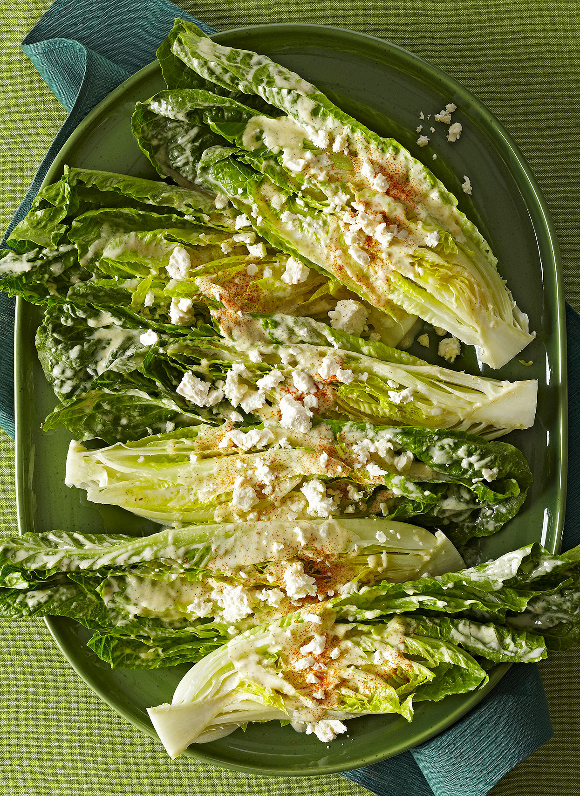

Romaine Hearts

Description
I saw this recipe in a magazine, and it came with a story that tried to explain it.
This was supposed to be a take on Ceasar Salad, but it doesn't seem to have a lot in common with that.
Still, it looks interesting and I might make it or use it for inspiration.
Ingredients
- 2 large egg yolks
- 1 garlic clove, chopped
- 1 tablespoon Dijon mustard
- 3 tablespoons fresh lemon juice
- 1/2 cup extra-virgin olive oil
- 1/2 teaspoon fine sea salt, plus more to taste
- 4 jumbo romaine lettuce hearts
- 8 ounces (3 cups packed) finely grated Parmesan cheese
- Freshly ground black pepper
Directions
- In a blender or mini food processor, combine the egg yolks, garlic, mustard and lemon juice and puree at medium speed while slowly drizzling in the olive oil, until it is fully incorporated and the dressing resembles a pourable mayonnaise. Stir in the salt. Taste, and season with more salt, if needed.
- Position a rack in the highest position in the oven and turn on the broiler.
- Trim off the barest slice of the browned end of each romaine heart, making sure to keep the core intact. Halve each romaine heart lengthwise.
- Lay out the romaine halves, cut side up, on a rimmed baking sheet large enough to hold them in a single layer. Brush each half with the dressing, making sure that it gets between the leaves. Sprinkle with the Parmesan. (It may seem like way too much cheese, especially if you grated the cheese with a Microplane so it’s incredibly fluffy, but it works.) Broil until the cheese is bubbling and golden brown, 3 to 4 minutes. Grind black pepper over the top and serve hot.